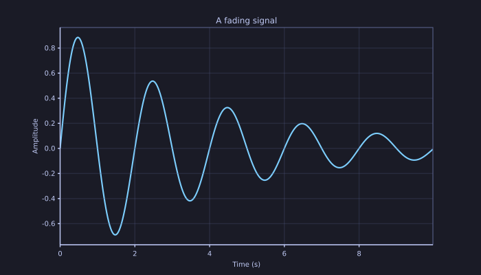

OrbitalCommons / projects / rizzma
Visualize / Give your data a little presence.
rizzma
Matplotlib-inspired scientific plotting in Rust. Describe a figure once, then render it to PNG, SVG, PDF, or an interactive browser canvas.
Give your data a little presence.
Good figures help good ideas travel. rizzma follows the familiar Figure → Axes → Artists model, with a pyplot-style facade for quick work and multiple renderers behind the same figure description.
A familiar model
Build plots with figures, axes, artists, and a concise pyplot-style API.
Several destinations
Use PNG for pixels, SVG or PDF for vectors, and canvas for the browser.
Interaction included
The WebAssembly renderer supports browser panning, zooming, and streaming plots.
See it in practice
Three small examples, rendered by the published rizzma crate. Pick a view and download the actual output.



These are pre-rendered figures using synthetic data, served directly from this site. See the rendering source, or explore the full plot gallery.
Start building
cargo add rizzmaFrom an idea to a few lines of code
use rizzma::pyplot as plt;
fn main() -> Result<(), Box<dyn std::error::Error>> {
let x = [0.0, 1.0, 2.0, 3.0, 4.0];
let y = [0.0, 0.8, 0.3, -0.4, 0.0];
plt::plot(&x, &y);
plt::title("First light");
plt::xlabel("Time (s)");
plt::ylabel("Signal");
plt::savefig("first-light.svg")?;
plt::savefig("first-light.png")?;
Ok(())
}The output extension selects the renderer. Use the object-oriented Figure and Axes APIs when you need more control over layout and artists.
Choose what you need
| Target | Use it for |
|---|---|
| PNG | Raster figures for reports, presentations, and image workflows. |
| SVG | Scalable figures for websites and vector editing. |
| Vector output for documents and publication workflows. | |
| Canvas / WebAssembly | Interactive browser figures with pan, zoom, and live updates. |
Plot types range from lines, scatter, and histograms to contours, heatmaps, polar plots, and 3D views. Perceptually organized color maps and a TeX-subset math renderer support scientific presentation. Explore the API →
Examples and feature notes reviewed against rizzma 1.13.3. Source & contributions →
Bring astronomical image data into Rust.